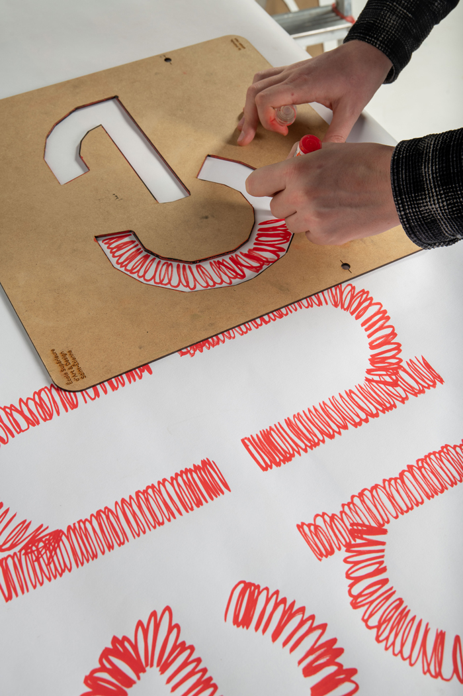

En collaboration avec → Thomas Dutoit
La Fixeuse est une typographie identitaire dessinée spécifiquement pour l'exposition → Le Monde, Sinon Rien dans le cadre de la 12e Biennale Internationale Design de Saint-Étienne 2022.
Développée à partir de la police de caractères « BTP » d'Émilie Rigaud, elle permet de créer un jeu de composition autonome et d'appréhender le signe par la forme, la contreforme, le tracé, etc.
Une fois numérisée, elle fait écho à la scénographie de l'exposition par son système de construction et peut alors être ensuite utilisée pour de multiples supports graphiques. Les variations possibles permettent à tou·te·s de s'approprier différentes formes d'expressivité sensibles et singulières à travers le geste de la main.